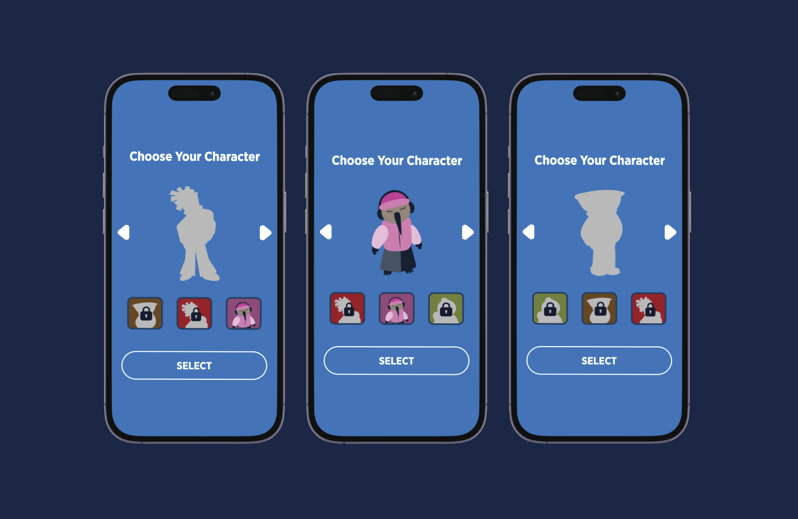
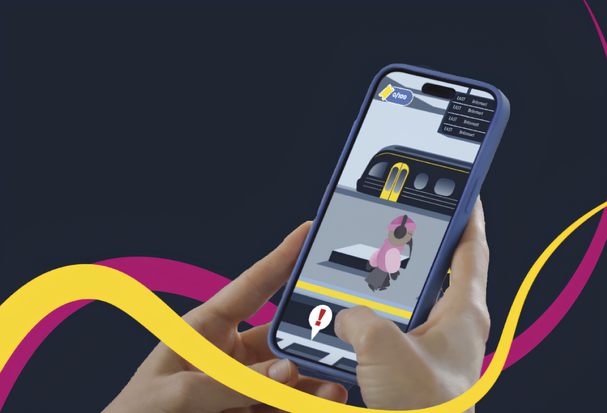
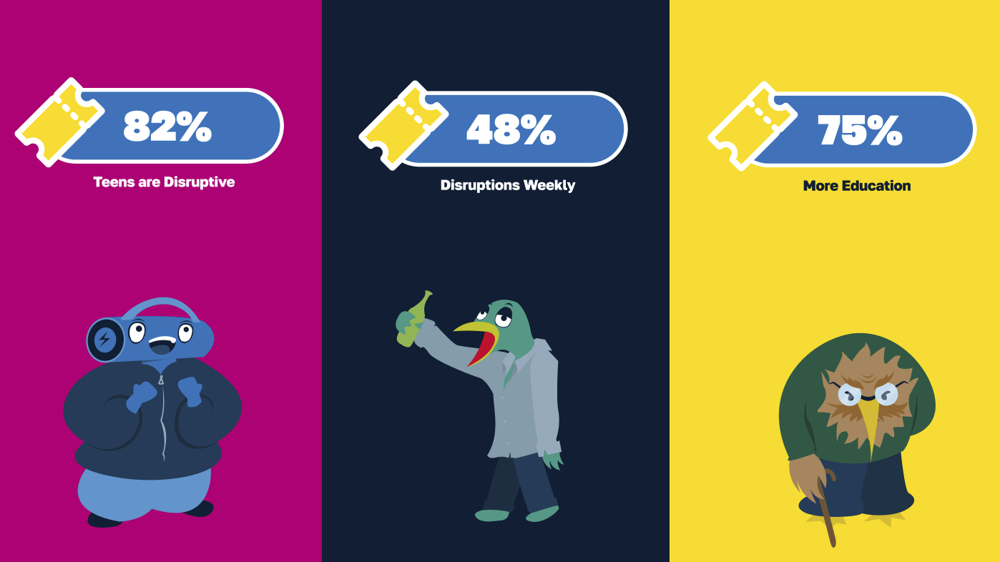
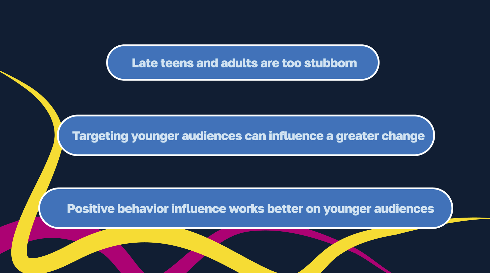
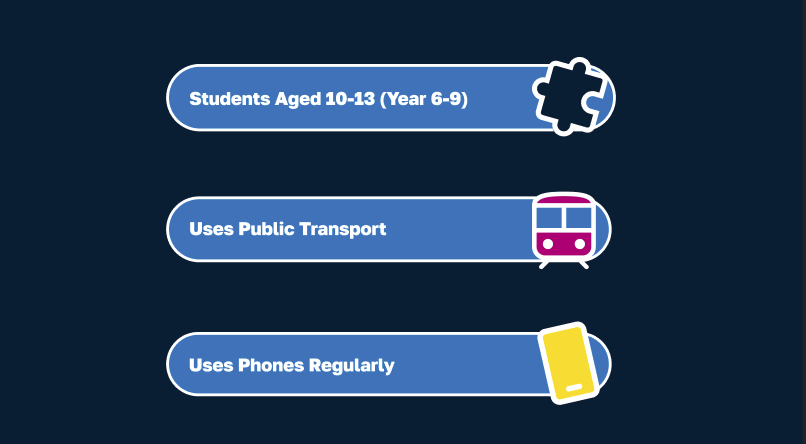
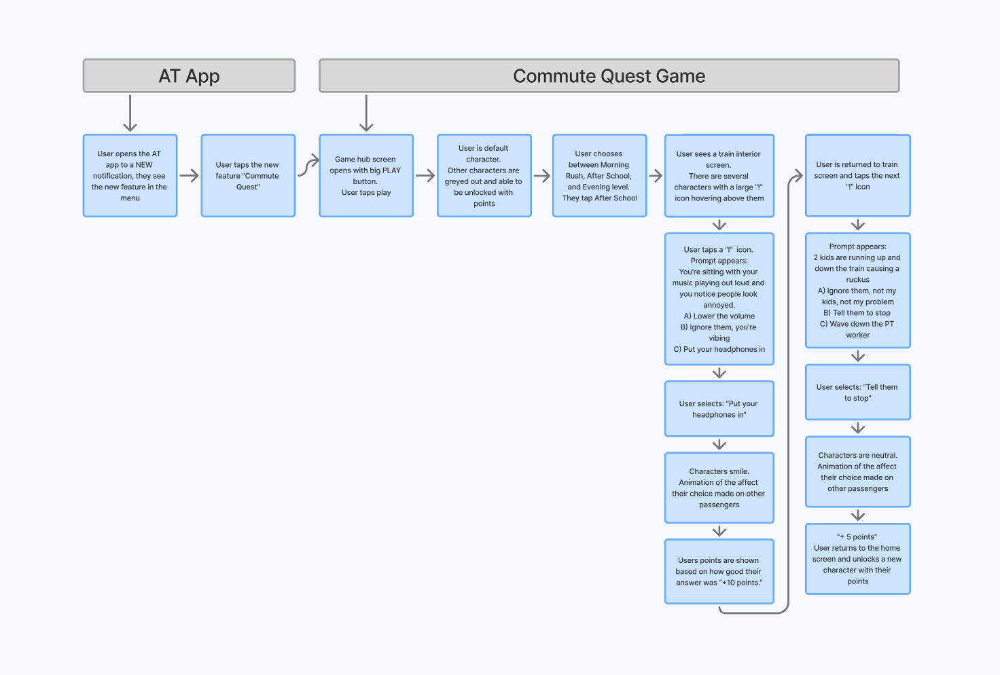
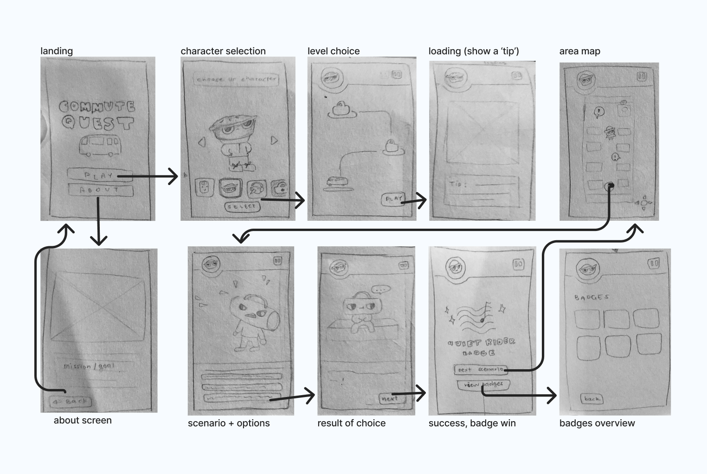
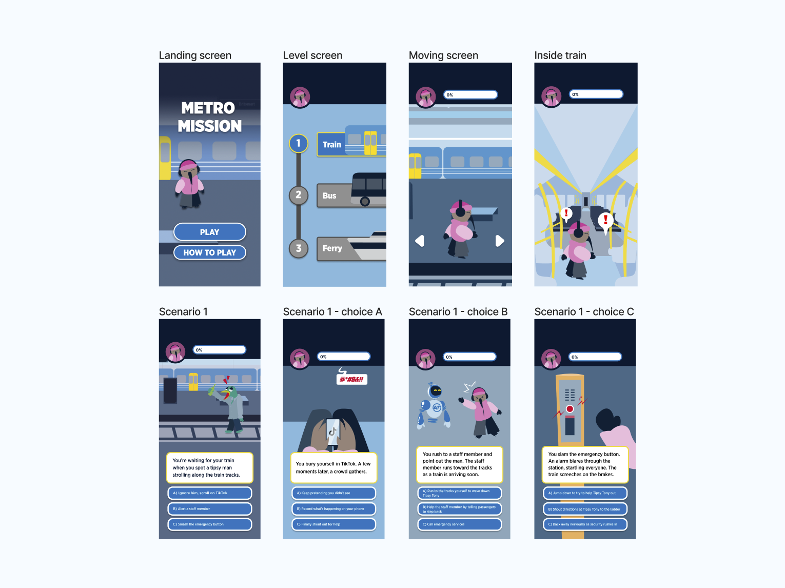
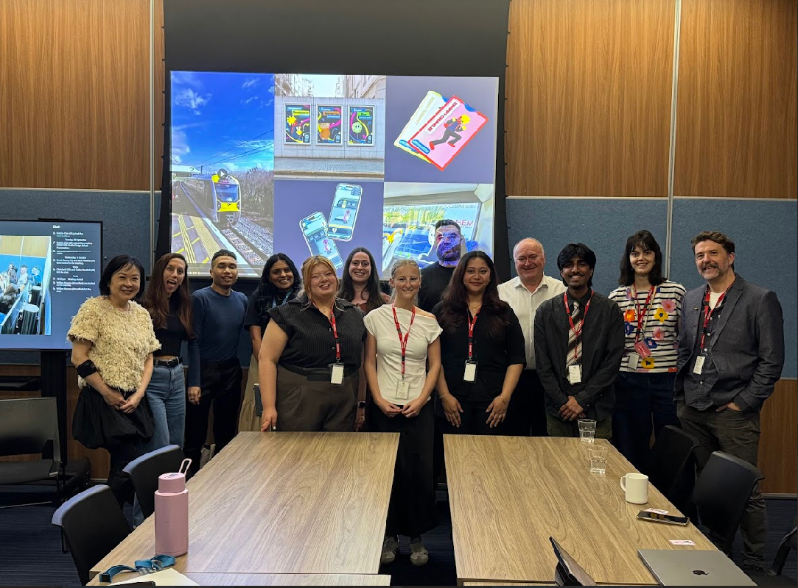

Outcome
The Result
A mobile, choice-based game that guides users through real-world scenarios, rewarding positive decisions to encourage better social behaviour on public transport.



Mobile, choice game to encourage safer public transport journeys.
Team Project
To explore how Auckland Transport could help people feel safer and be safer on public transport, while encouraging more positive behaviour among passengers.
Passengers often feel unsafe on public transport due to negative behaviour, particularly from teens. While those actions are not always physically threatening, they create an environment that makes people feel unsafe. A key issue is the lack of clearly communicated behavioural expectations across public transport.
We started by researching primary and secondary descriptive data on public transport passenger behaviour. Researching who is responsible, what actions are most common, and who feels most affected. We then move ways to keep these people move positive.


Research and surveys results encouraged a pivot toward younger intermediate-aged passengers for this solution. This demographic represents an opportunity to encourage positive behaviour before negative habits become ingrained.

Mapping out a choice-based game system so users can navigate on a public transit system safely and choose correct responses to situations.

Working through the game logic and core mechanics. Mapping when the user is playing the game, what happens in each level, text and visual content, and the overall game flow.


Carefully working in progress sessions with the client and user testing. Gathered feedback on the game from the target audience and incorporated insights into the next iteration.

Refining the UI and experience based on feedback. Finalising layouts, game mechanics, and visual design to get ready for final delivery.
A mobile, choice-based game that guides users through real-world scenarios, rewarding positive decisions to encourage better social behaviour on public transport.
